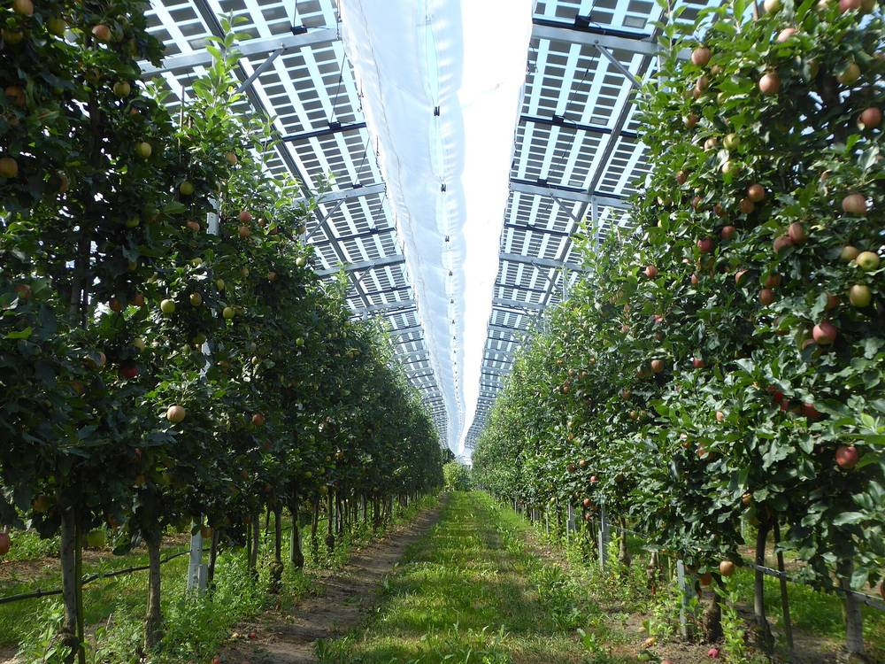
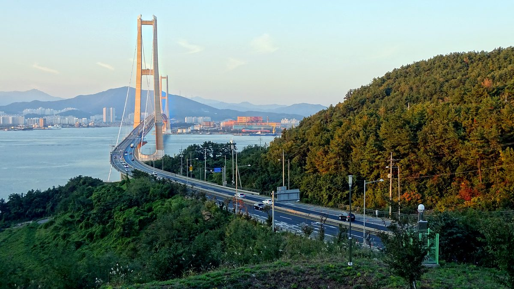
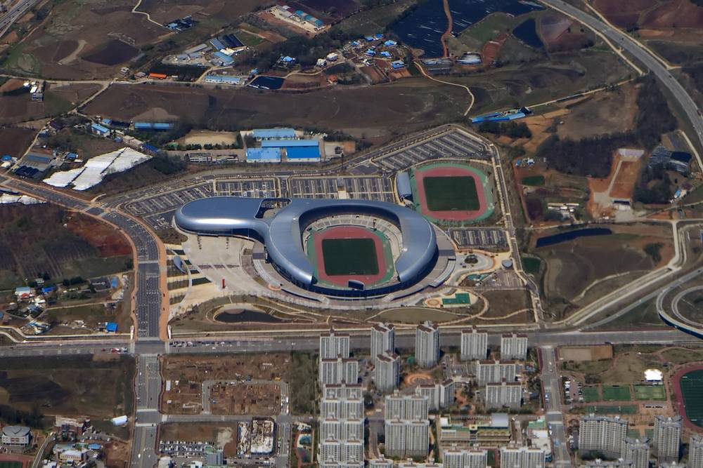
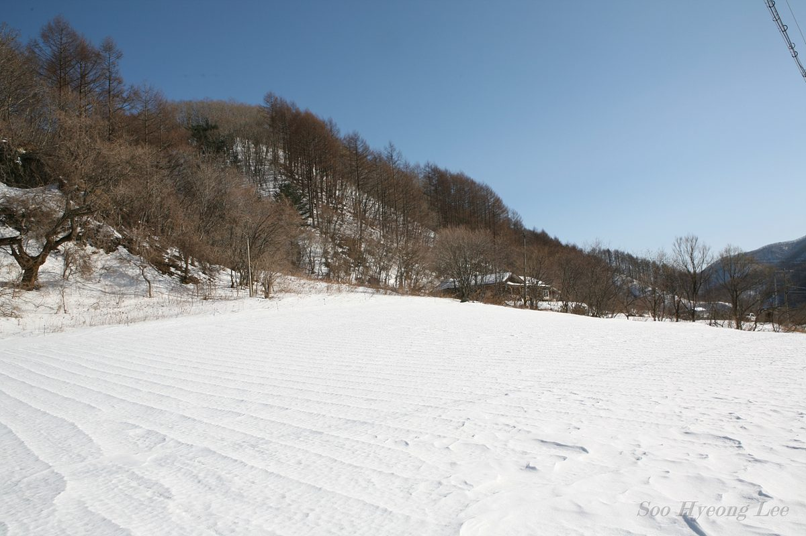
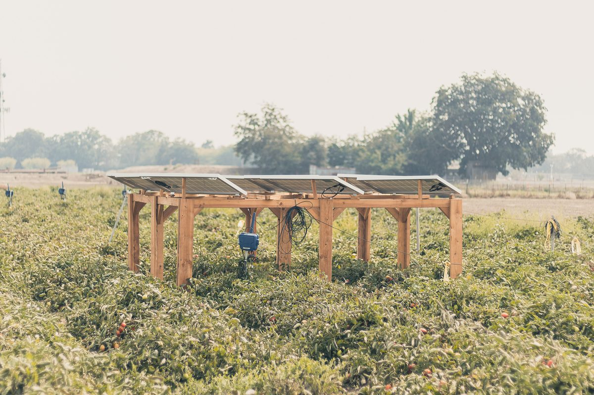

익산시, 12월 영농형 태양광 법 시행 앞두고 "햇빛소득마을과 묶어 금융·ESS 지원"
최정호 시장 "설비 면적은 농지의 20% 안팎, 발전 소득이 더 커"…인허가·설치비·계통 연계는 과제로 남아




익산시, 햇빛소득마을 사업구역 '리'에서 '면' 단위로 넓혀 달라 정부에 건의
최정호 시장 "발전소 옆 마을도 함께 혜택 누려야"…하천 사면·폐교·국공유지까지 부지 찾기, 관리기관 협의는 과제

영농형 태양광 실증 29건 중 24건에서 수확량 줄어…법 시행 앞두고 "농가 소득 보장 장치가 먼저"
농식품부 청주 '상생 한마당'에 220여 명…당진 감자 44.3% 감소, 농지 일시사용 허가는 최장 8년에서 23년으로
- 영농형태양광·햇빛소득마을, RPS 개편 뒤 수익 우대 협의 중…송미령 장관 "아직 확정된 것은 아니다"
- 인천 검단2산단, 실시계획 단계부터 입주기업 옥상 태양광 의무화…지붕 임대·저가 전기 공급 제시
- 시화·화옹 간척지 최대 3GW 영농형 태양광…땅 57%가 안산 대부도인데 안산시 계획엔 용량·이익공유 '빈칸'
- 이탈리아 재생에너지공동체·공동 자가소비 7,797곳·636MW로 늘어…10개월 새 4배, 남부는 뒤처져
- 이탈리아 사비나 산골 마을 에너지공동체들 카사프로타서 손잡아…"순수익은 전부 마을 살리기에"
- 송전선로 주민 이익공유 논의 본격화…정부 "신규 철탑 최대 2,214기 줄일 수 있다"
정치 더보기 ›
국민의힘, 내년 예산 삭감 대상에 '햇빛소득마을 등 재생에너지'·협동조합·사회연대경제 사업 꼽아
예결위원들 "재생에너지 1조8,210억 원은 증액중독, 협동조합 819억 원·사회연대경제 633억 원은 우리끼리 예산" 주장…햇빛소득마을만의 삭감액은 안 밝혀…정부는 같은 날 예산안 제안설명에서 햇빛소득마을 확산 등 재생에너지 보급 예산 두 배 증액을 설명했으나, 지목에 직접 답한 반론은 아직
정책 더보기 ›
영농형태양광·햇빛소득마을, RPS 개편 뒤 수익 우대 협의 중…송미령 장관 "아직 확정된 것은 아니다"
농식품부·기후부 협의…영농형태양광사업법은 12월 17일 시행 예정
산업 더보기 ›
인천 검단2산단, 실시계획 단계부터 입주기업 옥상 태양광 의무화…지붕 임대·저가 전기 공급 제시
인천도시공사, 77만㎡ 산단에 RE100 문턱 낮추는 지원책 마련
사회 더보기 ›
영농형 태양광 실증 29건 중 24건에서 수확량 줄어…법 시행 앞두고 "농가 소득 보장 장치가 먼저"
농식품부 청주 '상생 한마당'에 220여 명…당진 감자 44.3% 감소, 농지 일시사용 허가는 최장 8년에서 23년으로
지역 더보기 ›
시화·화옹 간척지 최대 3GW 영농형 태양광…땅 57%가 안산 대부도인데 안산시 계획엔 용량·이익공유 '빈칸'
대송단지 2,515ha에서 벼농사 짓는 38개 조합 보상·참여 방식도 정해지지 않아
오피니언 더보기 ›
칼럼 | 당진 철강, 재생에너지는 어디까지 왔나…"책임은 준공 사진 아닌 설치 규모로 증명해야"
조순형 충남환경운동연합 에너지전환팀장, 현대제철 3.27MW 태양광은 연간 전력 사용의 0.06% 수준이라고 분석
시민에너지 더보기 ›
이탈리아 재생에너지공동체·공동 자가소비 7,797곳·636MW로 늘어…10개월 새 4배, 남부는 뒤처져
GSE 10월 31일 자료 분석…풀리아는 476곳·15.7MW·이용자 3,517명, 정부는 1MW 이하 태양광에 12억 유로 투자 보조 예고
햇빛소득마을 더보기 ›
익산시, 12월 영농형 태양광 법 시행 앞두고 "햇빛소득마을과 묶어 금융·ESS 지원"
최정호 시장 "설비 면적은 농지의 20% 안팎, 발전 소득이 더 커"…인허가·설치비·계통 연계는 과제로 남아
해외 더보기 ›
이탈리아 사비나 산골 마을 에너지공동체들 카사프로타서 손잡아…"순수익은 전부 마을 살리기에"
알타 발레 델 파르파 공동체 설비 6기·조합원 약 50명…오르비니오는 묘지 지붕 50kW 시 부담 없이 설치, 인센티브 기한 2027년 12월 31일 연장 요구
益山市、ひかり所得村の事業区域を「里」から「面」単位へ広げるよう政府に建議
崔正浩市長「発電所の隣の村も一緒に恩恵を受けるべき」…河川斜面・廃校・国公有地まで用地探し、管理機関との協議が課題
営農型太陽光の実証29件中24件で収穫量が減少…法施行を前に「農家の所得を守る仕組みが先」
農林畜産食品部が清州で「共生フェア」、約220人参加…唐津のジャガイモは44.3%減、農地一時使用許可は最長8年から23年へ
政治 もっと見る ›
国民の力、来年度予算の削減対象に「日差し所得村など再生可能エネルギー」・協同組合・社会連帯経済事業を挙げる
予算決算特別委員ら「再エネ1兆8,210億ウォンは増額中毒、協同組合819億ウォン・社会連帯経済633億ウォンは身内予算」と主張…日差し所得村単独の削減額は示さず…政府は同日の予算案提案説明で日差し所得村の拡大など再エネ普及予算の倍増を説明したが、名指しに直接答えた反論はまだ
政策 もっと見る ›
営農型太陽光・太陽光所得村、RPS改編後の収益優遇を協議中…宋美玲長官「まだ確定したものではない」
農食品部・気候部が協議…営農型太陽光事業法は12月17日施行予定
産業 もっと見る ›
仁川・黔丹2産団、実施計画の段階から入居企業の屋上太陽光を義務化…屋根賃貸・低価格電力の供給を提示
仁川都市公社、77万㎡の産団にRE100のハードルを下げる支援策
社会 もっと見る ›
営農型太陽光の実証29件中24件で収穫量が減少…法施行を前に「農家の所得を守る仕組みが先」
農林畜産食品部が清州で「共生フェア」、約220人参加…唐津のジャガイモは44.3%減、農地一時使用許可は最長8年から23年へ
地域 もっと見る ›
始華・華翁干拓地で最大3GWの営農型太陽光…土地の57％が安山・大阜島なのに安山市の計画には容量・利益共有が「空欄」
大松団地2,515haで稲作を営む38の組合への補償・参加方式も決まらず
オピニオン もっと見る ›
コラム｜唐津の鉄鋼、再生可能エネルギーはどこまで来たか…「責任は竣工写真ではなく設置規模で証明すべき」
チョ・スンヒョン忠南環境運動連合エネルギー転換チーム長、現代製鉄の3.27MW太陽光は年間電力使用量の0.06%水準と分析
市民エネルギー もっと見る ›
イタリアの再エネ共同体・共同自家消費が7,797件・636MWに…10か月で4倍、南部は遅れ
GSEの10月31日データを分析…プーリアは476件・15.7MW・利用者3,517人、政府は1MW以下の太陽光に12億ユーロの投資補助を予定
太陽光所得村 もっと見る ›
益山市、12月の営農型太陽光法施行を前に「ひかり所得村と組み合わせ金融・ESSを支援」
崔正浩市長「設備面積は農地の20%前後、発電所得の方が大きい」…許認可・設置費・系統連系は課題
海外 もっと見る ›
イタリア・サビーナの山あいの村のエネルギー共同体がカザプロータで連携…「純収益はすべて村の再生に」
アルタ・ヴァッレ・デル・ファルファ共同体は設備6基・組合員約50人…オルヴィーニオは墓地の屋根に50kWを市の負担なしで設置、2027年12月31日のインセンティブ期限延長を要求
政治 更多 ›
国民力量党将"阳光收入村等可再生能源"、合作社和社会连带经济项目列为明年预算削减对象
预决算特别委员会委员称"可再生能源1.821万亿韩元属增额成瘾，合作社819亿韩元、社会连带经济633亿韩元是自己人预算"…未说明阳光收入村单独削减额…政府同日在预算案提案说明中表示阳光收入村推广等可再生能源普及预算将翻倍，但尚无直接回应点名的反驳
政策 更多 ›
农光互补、阳光收入村，RPS改革后收益优待正在协商…宋美玲部长："尚未确定"
农食品部与气候部协商…农光互补事业法预定12月17日施行
产业 更多 ›
仁川黔丹2产业园从实施计划阶段起强制入驻企业屋顶安装光伏…提供屋顶租赁和低价供电
仁川都市公社为77万㎡产业园制定降低RE100门槛的扶持措施
社会 更多 ›
农光互补示范29项中24项减产…韩国法律施行前呼声:"先建立保障农户收入的机制"
农林畜产食品部在清州举办"共生大会",约220人出席…唐津土豆减产44.3%,农地临时使用许可从最长8年延至23年
地方 更多 ›
始华、华翁围垦地最高3GW农光互补项目…57%土地在安山大阜岛，安山市规划却未写容量与收益共享
在大松园区2,515公顷种稻的38个合作组织，补偿与参与方式也未确定
评论 更多 ›
专栏｜唐津钢铁，可再生能源走到了哪一步…"责任应以安装规模而非竣工照片来证明"
忠南环境运动联合能源转型组长曹顺亨分析称，现代制铁3.27MW光伏仅相当于年用电量的0.06%
市民能源 更多 ›
意大利可再生能源社区与集体自用配置增至7,797个、636MW…10个月增长4倍，南部落后
分析GSE截至10月31日数据…普利亚476个、15.7MW、用户3,517人，政府拟对1MW以下光伏提供12亿欧元投资补贴
阳光收入村 更多 ›
益山市迎接12月农光互补法实施："与阳光收入村结合，支持金融和储能"
市长崔正浩："设备面积约占农地20%，发电收入更高"…许可、安装费用和并网仍是课题
海外 更多 ›
意大利萨比纳山村能源社区在卡萨普罗塔联手…"净收益全部用于振兴村庄"
上法尔法谷社区有6套设施、约50名社员…奥尔维尼奥在墓地屋顶建50kW光伏、市政府零负担，要求延长2027年12月31日的激励申请期限
Iksan to Pair Agrivoltaics With Sunlight Income Villages, Offering Finance and Storage Support Ahead of December Law
Mayor Choi Jeong-ho says panels cover around 20% of farmland and power income outweighs the loss; permits, installation costs and grid connection remain hurdles
Iksan Asks Government to Widen Sunlight Income Villages From Single Villages to Whole Townships
Mayor Choi Jeong-ho says neighbouring villages should share the benefits; river slopes, closed schools and public land eyed as sites, but agency approvals remain a hurdle
Crop Yields Fell in 24 of 29 Agrivoltaic Pilots — Farmers Say Income Safeguards Must Come First as Korea's New Law Nears
About 220 attend agriculture ministry forum in Cheongju; Dangjin potatoes down 44.3%, while farmland-use permits stretch from up to 8 years to 23
- Korea Weighs Revenue Preference for Agrivoltaics and Sunlight Income Villages After RPS Overhaul, Minister Says "Nothing Is Final"
- Incheon's Geomdan 2 Industrial Park Mandates Rooftop Solar for Tenants From Planning Stage, Offers Roof Leasing and Low-Cost Power
- Up to 3GW of Agrivoltaics on Sihwa-Hwaong Reclaimed Land: 57% Is in Ansan's Daebudo, Yet City Plan Leaves Capacity and Benefit-Sharing Blank
- Italy's Renewable Energy Communities and Collective Self-Consumption Schemes Reach 7,797 and 636MW — Fourfold in 10 Months, but the South Lags
- Energy Communities in Italy's Sabina Hill Villages Join Forces in Casaprota: "All Net Profit Goes to Reviving the Area"
- Talks on Sharing Transmission Line Benefits with Residents Gain Pace; Government Says Up to 2,214 New Pylons Can Be Avoided
Politics More ›
People Power Party targets "sunlight income villages and other renewables", cooperatives and social solidarity economy in next year's budget cuts
Budget committee members call 1.821 trillion won in renewables spending "addicted to increases" and 81.9 billion won for cooperatives and 63.3 billion won for the social solidarity economy "budgets for our own people"; no separate cut for the villages named; the government outlined a doubling of renewable deployment spending, including expanding the villages, in its budget presentation the same day, but no direct response to the targeting yet
- Climate ministry budgets 550 million won next year to train education and outreach staff for sunlight income villages; PPP lawmaker Lee Jong-bae calls it short-term gig spending
- "We make electricity but have no way to send it": Gangwon councillor says 41 of 42 Sunlight Income Villages are stuck on grid conditions, demands village-by-village grid timetable with KEPCO
- President Lee pledges 2.8 trillion won "for expanding renewables, including spreading Sunlight Income Villages" in 2027 budget speech, doubling farm and fishing basic income to 35 counties
- Changwon councillor proposes a Changwon-style agrivoltaics and rural solar strategy in five-minute speech, calling for a master plan, pilot projects and a share of revenue for farmers and villages
Policy More ›
Korea Weighs Revenue Preference for Agrivoltaics and Sunlight Income Villages After RPS Overhaul, Minister Says "Nothing Is Final"
Agriculture and climate ministries in talks... Agrivoltaics Act due to take effect December 17
- Talks on Sharing Transmission Line Benefits with Residents Gain Pace; Government Says Up to 2,214 New Pylons Can Be Avoided
- Uiseong County enacts ordinance to share renewable energy profits with residents; county head Choi Yu-cheol says "wind and sunlight have no owner"
- Agriculture ministry briefs farmers in Cheongju on agrivoltaics: 80% of site must stay in farming, residency rules set out
- Korea opens agrivoltaic power business to farm corporations as farm ministry finalizes 50 regulatory reforms
Industry More ›
Incheon's Geomdan 2 Industrial Park Mandates Rooftop Solar for Tenants From Planning Stage, Offers Roof Leasing and Low-Cost Power
Incheon Urban & Housing Corporation designs support to lower the RE100 hurdle for the 770,000㎡ park
- Korea Western Power to build solar on car parks and rooftops at Korean Agency for Technology and Standards; 1,614MWh a year expected
- Leek Entrepreneurs in the Netherlands Launch Energy Cooperative to Tackle Grid Limits
- German Citizen Solar Company Solarcomplex, Owned by 1,700 Shareholders, Signs 5-Year Fixed-Price Deal for Solar Plus Battery
- 3,899.68kWp of Solar Approved for Two Saemangeum Industrial Park Tenants
Society More ›
Crop Yields Fell in 24 of 29 Agrivoltaic Pilots — Farmers Say Income Safeguards Must Come First as Korea's New Law Nears
About 220 attend agriculture ministry forum in Cheongju; Dangjin potatoes down 44.3%, while farmland-use permits stretch from up to 8 years to 23
- Push to launch 'Value Finance Credit Union' co-owned by citizens and social solidarity economy groups; forum at National Assembly on the 11th
- Seoul mega-complexes cite management bylaws to block balcony solar, but 14 of 15 have no such ban in their bylaws
- Wasp nests and short circuits on neglected senior-centre rooftop solar: a Gyeongnam social cooperative trains 16 Solar Masters to inspect them
- National Assembly forum on energy rights proposes writing minimum guarantees, participation and benefit-sharing rights into law, beyond bill subsidies
Regions More ›
Up to 3GW of Agrivoltaics on Sihwa-Hwaong Reclaimed Land: 57% Is in Ansan's Daebudo, Yet City Plan Leaves Capacity and Benefit-Sharing Blank
Compensation and participation for 38 rice-farming groups on the 2,515ha Daesong tract also undecided
- Honam Transmission Capacity to Grow from 37GW to 64GW; Will Yeosu and Gwangyang Industrial Complexes Benefit?
- Villagers below Gombaeryeong in Inje again oppose moves to build wind turbines; county says it will not push projects most residents oppose
- Jangheung County holds third public-private council on 49 MW onshore wind cluster in Yuchi-myeon, discusses resident participation and profit sharing ahead of designation bid
- Opposition committee on Naju Lake floating solar says "this is not a compensation negotiation," reaffirms demand to scrap project
Opinion More ›
Column | How Far Have Renewables Come at Dangjin Steel? "Responsibility Must Be Proven by Installed Capacity, Not Completion Photos"
Jo Sun-hyung of the Chungnam Environmental Movement Federation says Hyundai Steel's 3.27MW solar covers about 0.06% of its annual power use
- "Allow standard modules in agrivoltaics and farming becomes impossible": cooperative federation organiser Park Seung-ok rebuts Korea Energy Agency's July paper
- Australian researcher argues community bonds keep renewable energy opposition going, and calls for meaningful local participation and trust-building
- Farm-press column calls "sunlight income villages" an unproven policy, warns of token cooperatives and reliance on outside firms
- Draft agrivoltaics decree limits agricultural corporations' role; op-ed argues "open a path to work with specialist firms"
Citizen Energy More ›
Italy's Renewable Energy Communities and Collective Self-Consumption Schemes Reach 7,797 and 636MW — Fourfold in 10 Months, but the South Lags
Analysis of GSE data to 31 October; Puglia has 476 schemes, 15.7MW and 3,517 users; government plans €1.2 billion in investment grants for solar up to 1MW
- Hwaseong Citizen Renewable Energy Cooperative Wins Top Private-Sector Prize at 8th Korea Solar League
- Citizen-funded 'RE-Bit No. 4' power plant completed in Hwaseong with 299kW on a farm produce center roof
- German town of Lindlar and 29 village clubs sign deal to share wind-farm participation payments
- Oristano, Italy, Prepares a Renewable Energy Community, but Participation Remains Low
Sunlight Income Village More ›
Iksan to Pair Agrivoltaics With Sunlight Income Villages, Offering Finance and Storage Support Ahead of December Law
Mayor Choi Jeong-ho says panels cover around 20% of farmland and power income outweighs the loss; permits, installation costs and grid connection remain hurdles
- Iksan Asks Government to Widen Sunlight Income Villages From Single Villages to Whole Townships
- Three villages in Wondong-myeon, Yangsan, pursue Sunlight Income Villages with Nakdong River basin funds; application to interior ministry contest still ahead
- Damyang County Asks Government to Fund Storage and Ease Local Cost Burden to Fix Grid Problem for Sunlight Income Villages
- Yeoju's Guyang-ri builds a 1 MW solar plant owned by the whole village, clearing a collateral wall with a 420 million won credit union loan
World More ›
Energy Communities in Italy's Sabina Hill Villages Join Forces in Casaprota: "All Net Profit Goes to Reviving the Area"
Alta Valle del Farfa community runs six plants with about 50 members; Orvinio installs 50kW on cemetery roofs at no cost to the town; calls to extend the 31 December 2027 incentive deadline
- Lower Bavarian citizen energy cooperative breaks ground on 10.8MWp solar park co-owned by 2,200 members
- German city of Gütersloh holds first 'Climate Forum' on citizen energy; four local cooperatives present projects
- Mecklenburg-Vorpommern coalition plan would waive grid fees for neighbors of wind and large solar parks
- Austria's Guntramsdorf energy community objects to 2027 grid tariff draft, says discounts on shared power would shrink